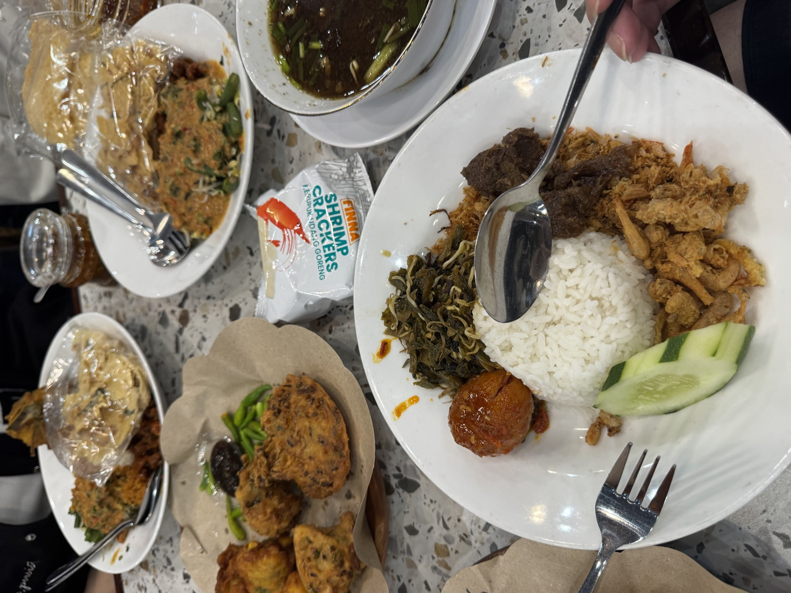
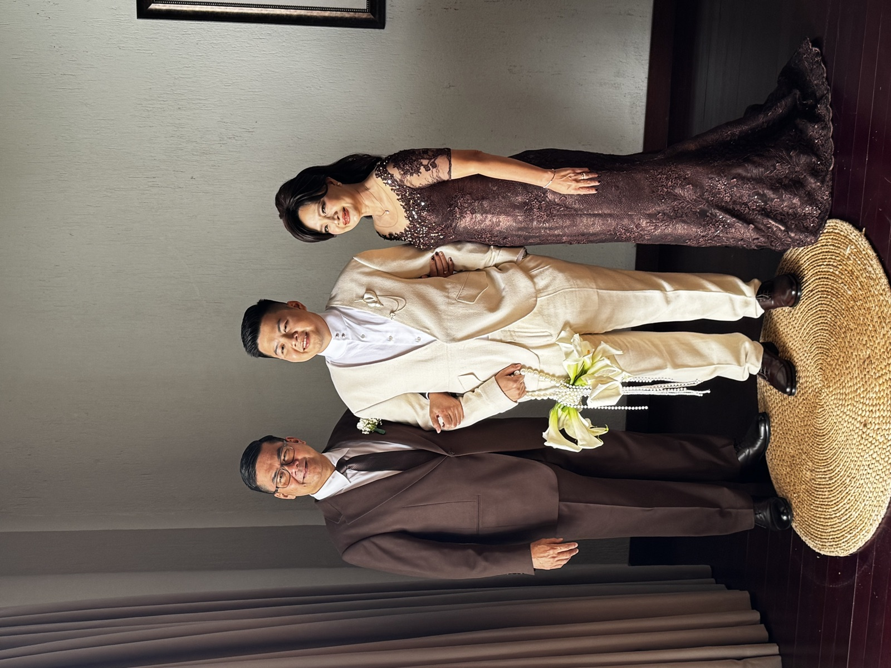
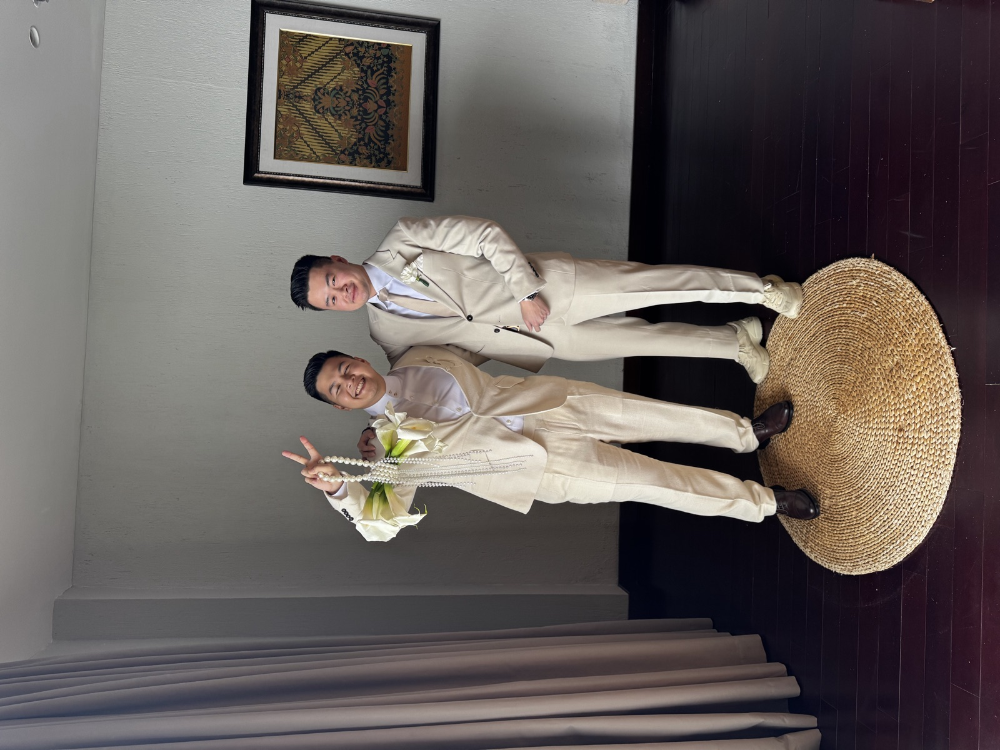
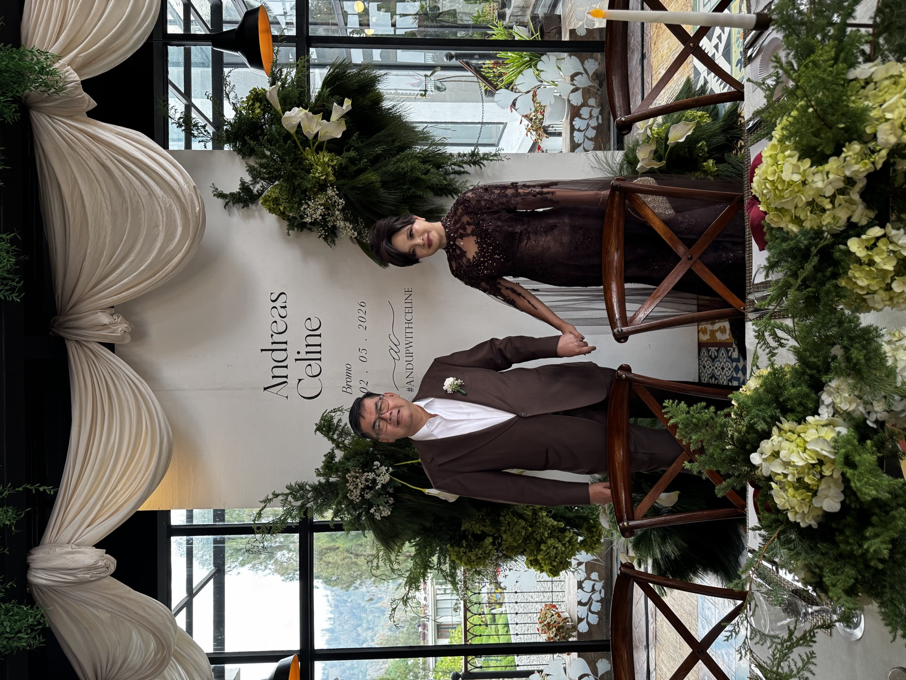
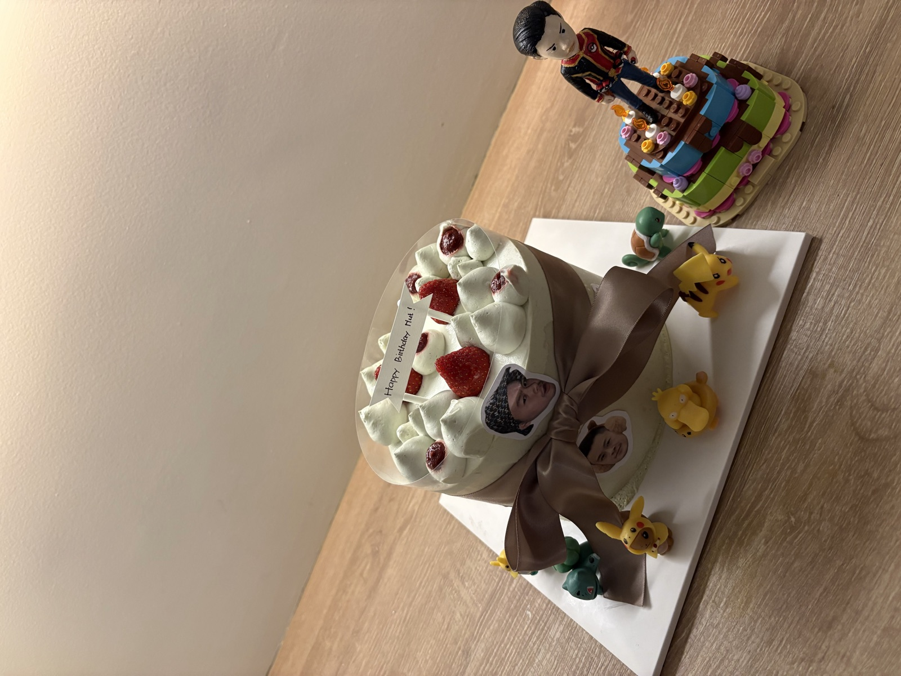
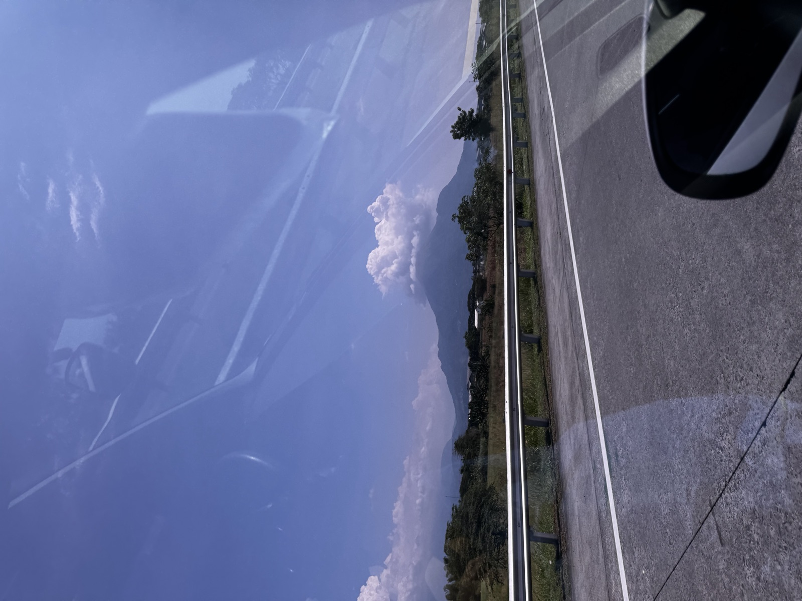

Short trip, full heart.
Jakarta to East Java, then into the Malang and Bromo area for a compact 1-3 May weekend built around family, ceremony time, and a slow road back after the celebration.
Indonesia / 1-3 May 2026
This was not a normal sightseeing-first trip. The main reason was my brother's wedding with Celine, so the whole weekend had that rare mix of road logistics, family outfits, small emotional moments, and a Bromo backdrop that made everything feel bigger.
Jakarta to East Java, then into the Malang and Bromo area for a compact 1-3 May weekend built around family, ceremony time, and a slow road back after the celebration.
The memory is less about ticking places off and more about the atmosphere: dressing up, gathering in the same rooms, looking out toward Bromo, and carrying the wedding feeling home.
Everything revolved around my brother and Celine, with the kind of family photos that only happen when everyone is properly dressed and slightly emotional.
The first evening had that dramatic East Java light: cloud, mountain silhouette, and a warm sky that made the trip feel cinematic for a moment.
A short trip still collects its little pieces: a family meal, wedding cake details, quiet car-window views, and the funny tiredness after a full wedding day.
1 May / East Java Arrival
The first day was mostly movement: airport timing, road transfer, family meal energy, and the feeling of arriving somewhere for an important reason. Then the evening view near Bromo turned the whole mood warmer, with golden sky and clouds sitting low around the mountains.


A soft opening: a meal, a long road, and the kind of sunset that makes everyone pause for photos.
2 May / Wedding Day
Wedding days move quickly, but the photos keep the small parts still: getting ready, standing around in formal clothes, laughing between poses, and watching my brother and Celine step into the center of the day. It felt personal in a way that a normal travel itinerary never does.






This chapter is allowed to be family-heavy. It was the point of the trip, and the photos feel warmer because of it.
3 May / Road Back
The last day had that post-wedding softness: everyone a bit tired, the schedule less formal, and the road slowly pulling the weekend back into normal life. The mountain view from the car window felt like a final little reminder that this was still a trip, even if the memory is mostly family.
